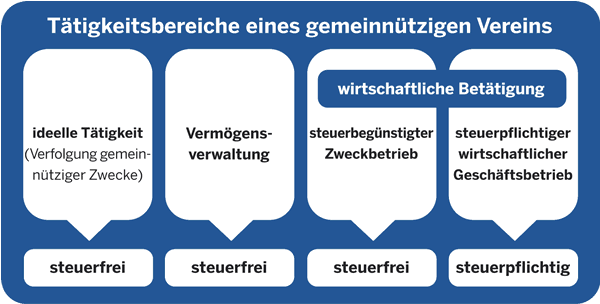

Die Tätigkeitsbereiche eines gemeinnützigen Vereins

Während Gewerbetreibende und Privatpersonen der Einkommensteuer unterliegen, findet auf Vereine das Körperschaftsteuerrecht Anwendung. Es gilt für alle einschlägigen Einkunftsarten (zum Beispiel für Einkünfte aus Gewerbebetrieb, aus Kapitalvermögen oder aus Vermietung und Verpachtung).
Gemeinnützige Vereine (ebenso mildtätige und kirchliche Vereine) sind von der Körperschaftsteuer befreit. Doch keine Regel ohne Ausnahme:
Soweit sich Vereine wirtschaftlich betätigen, sind die Einkünfte unter anderem aus Wettbewerbsgründen nur teilweise oder in bestimmten Grenzen steuerfrei. Vereine sind zur Finanzierung ihrer Aufgaben auf die verschiedensten Geldquellen angewiesen. Außer Zuschüssen und Mitgliedsbeiträgen können Zinsen und Pachteinnahmen anfallen; mit Annoncen, Spruchbändern, Werbetafeln und anderen Einnahmen aus Werbung werden zunehmend weitere Quellen erschlossen; aber auch Eintrittsgelder bei den verschiedensten Veranstaltungen oder Überschüsse der Vereinsgaststätte stellen bei manchen Vereinen einen fest eingeplanten Etatposten dar.
Nach dem Grad der Beteiligung am Wirtschaftsverkehr (Außenwirkung) sind bei den gemeinnützigen Vereinen folgende vier Tätigkeitsbereiche zu unterscheiden:
- der steuerfreie ideelle Bereich,
- die steuerfreie Vermögensverwaltung,
- der steuerbegünstigte wirtschaftliche Geschäftsbetrieb (Zweckbetrieb),
- der steuerpflichtige wirtschaftliche Geschäftsbetrieb.
Diese kompliziert wirkende Abgrenzung soll durch die folgenden Erläuterungen verständlicher gemacht werden.